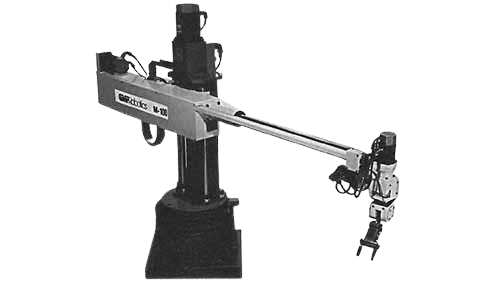
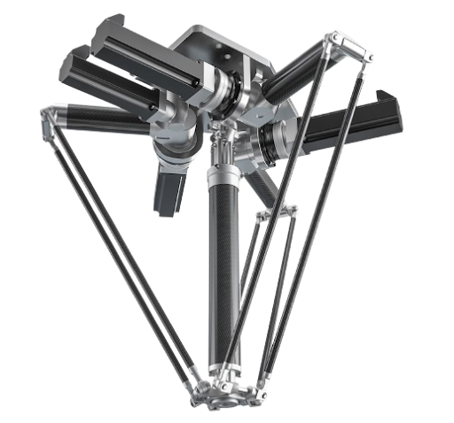
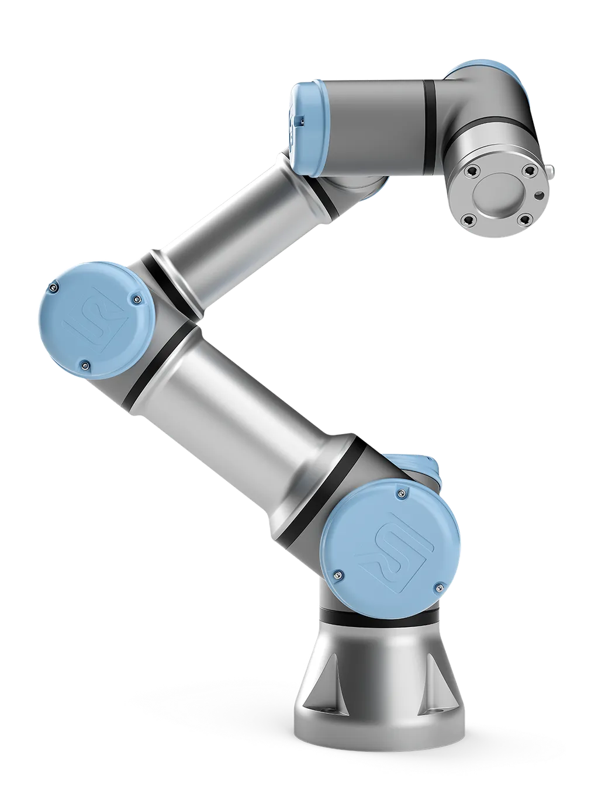

Robôs Industriais
Os principais modelos de robôs industriais usados em processos produtivos automatizados, com suas características, aplicações e a relação de cada um com a Internet das Coisas (IoT).
Catálogo de robôs industriais
Escolha um modelo para abrir a página completa, com especificações técnicas, aplicações, integração com IoT e exemplos de fabricantes.

Robô Articulado
Imita os movimentos de um braço humano, com várias juntas rotativas. É o tipo mais versátil e utilizado na indústria, aplicado em soldagem, montagem e pintura.
Saiba mais
Robô Cartesiano
Movimenta-se em linhas retas nos eixos X, Y e Z. Ideal para aplicações que exigem precisão, como manuseio de peças, corte e impressão 3D.
Saiba mais
Robô SCARA
Possui braço com juntas horizontais e eixo vertical rígido. Ideal para operações rápidas e precisas no plano horizontal, como montagem e pick and place.
Saiba mais
Robô Cilíndrico
Combina um movimento rotativo na base com movimentos lineares. É usado em tarefas de montagem, soldagem e manuseio de materiais em espaços compactos.
Saiba mais
Robô Delta
Estrutura paralela suspensa, projetada para manipular pequenos objetos com rapidez e exatidão. Muito usado em linhas de embalagem e alimentos.
Saiba mais
Robô Polar
Também chamado de esférico, possui um braço que gira e se estende em movimento esférico. Foi um dos primeiros modelos de robôs industriais desenvolvidos.
Saiba mais
Robô Colaborativo (Cobot)
Projetado para trabalhar lado a lado com pessoas, de forma segura, sem a necessidade de cercas de proteção. Representa uma das principais tendências da Indústria 4.0.
Saiba mais